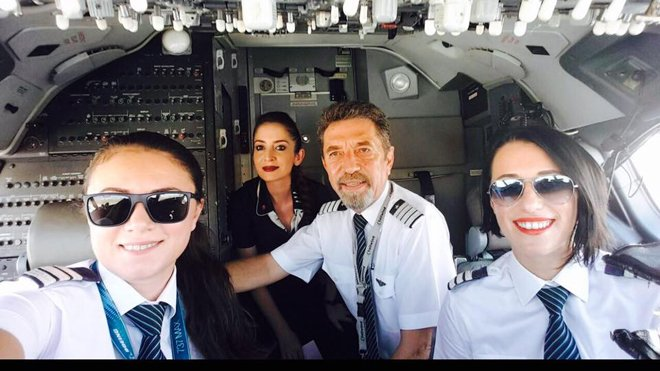

3 min read
Teknolojide Cinsiyet Eşitliği Büyümeyi Tetikleyecek
YASED’in 2014 araştırmasına göre bilgi ve iletişim teknolojileri sektöründeki 1 birimlik büyüme, Türkiye ekonomisinde 1.8 birimlik büyümeyi tetikleyecek etkiye sahip.21. yüzyıl bilişim teknolojilerinin çığır açıcı gelişmelerinin yüzyılı olduğu kadar, cinsiyet eşitliği ve kadınların ekonomik olarak güçlendirilmesinin de yüzyılı olacak.
Bu nedenle, kadın girişimciliğinin teşvik edilmesi, önünün açılması nasıl hayati bir öneme sahipse, kadınlarını bilişim teknolojilerinin sunduğu uçsuz bucaksız olasılıklar dünyasına güçlü bir biçimde açılımının sağlanması da aynı ölçüde önem taşıyor.
TÜİK tarafından yayınlanan Hanelerde Bilişim Teknolojilerinin Kullanımı raporuna göre, 2013 yılı içerisinde kentlerde yaşayan erkeklerin yüzde 69’u, kadınların yüzde 49,1’i bilgisayarı; erkeklerin yüzde 68,1’i ve kadınların yüzde 48’i interneti aktif biçimde kullanıyor. Bu oran kırsal kesimde bilgisayar kullanımı olarak erkeklerde yüzde 40,1’e kadınlarda ise yüzde 19,3’e düşüyor. İnternet kullanım oranı olarak ise erkeklerde yüzde 39,2’ye ve kadınlarda yüzde 18,4’e geriliyor...
4 min read
Türkiye’de ve Dünyada Teknoloji Alanında Oluşan Toplumsal Cinsiyet Eşitsizliği
144 ülke üzerinde yapılmış bir araştırmanın sonucu olan Küresel Cinsiyet Açığı Raporu’nda, özellikle Endüstri 4.0’ın yaygınlaşmasıyla bilim ve teknolojide daha fazla kadına ihtiyaç duyulduğu belirtilmektedir...
.jpeg)
2 min read
Mesleğinizi icra ederken karşılaştığınız tepkileri/durumları toplumsal cinsiyet bağlamında nasıl aktarabilirsiniz?
Toplumun temel olarak cinsiyet rolleriyle şekil aldığını düşünürsek sadece iş alanında değil her alanda aslında bu koşullarda olduğumuzu söyleyebilirim...

10 min read
Havacılıkta Toplumsal Cinsiyet Dengesi Geliştirme Çabaları
Havacılık, teknoloji yoğun, uluslararası ve ekip çalışmasına dayalı emniyet kritik endüstrilerden biridir. Kadınların da en başından itibaren havacılıkta önemli roller üstlendikleri görülmektedir. Dünya ve Türk tarihine baktığımızda kadın havacıların birçok alana göre havacılıkta son derece aktif olduğunu görmekteyiz...
6 min read
Havacılıkta kadın istihdamı artıyor; Pegasus kadın çalışan hedefine 5 yıl önceden ulaştı
Pilot, teknisyen, hava trafik kontrolörleri de dahil sektördeki her meslek grubunda kadın sayısı artıyor. 2 yıl önceki verilere göre, kadın çalışan oranı havayolu taşımacılığında yüzde 32 ila yüzde 60, kargo taşımacılarında yüzde 12- 15 arasında değişiyor....
5 min read
Mimarlık ve İnşaat Alanında Cinsiyet Eşitsizliği Devam Ediyor
Modern hayatımızda her meslekte kadının rolü her geçen gün artsa da yapı sektöründeki erkek egemen algısı devam etmektedir. Yapı sektöründe kadın olarak sadece işi başarıyla sonuçlandırmak değil aynı zamanda bu algı ile mücadele etmek gerekmektedir....
15 min read
Sağlık Sektöründe Kadın Emeğinin Toplumsal Cinsiyet Açısından Analizi
Sağlık sektörü, tarihsel olarak kadınların çoğunlukta olduğu bir sektör olmanın yanı sıra giderek daha fazla feminize olan bir sektördür. Sağlık hizmetleri içinde temel sağlık hizmetleri kapsamında olan koruyucu sağlık hizmetlerinde ve tedavi hizmetinin yoğunlukta olduğu hastane hizmetlerinde kadınlar ezici bir çoğunluktadır...
<
1
2
3
>